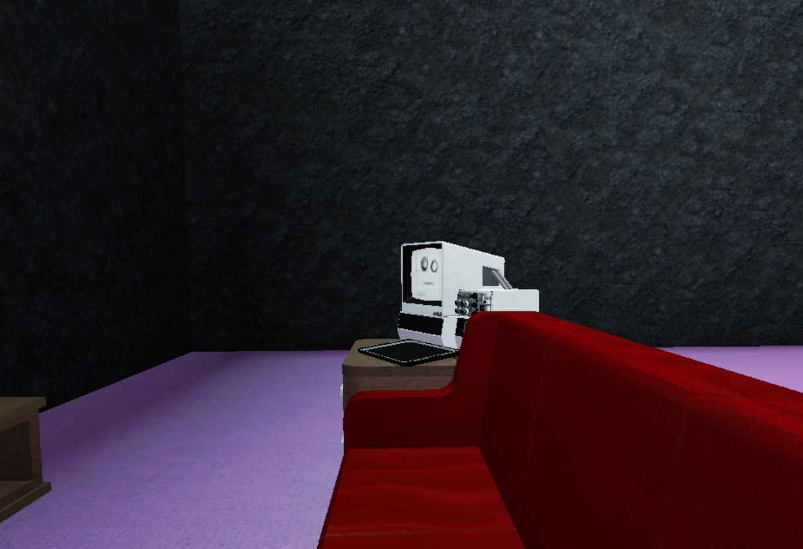

PAInter. One sentient AI rescued from an underwater containment site.
Usually rude, snarky, and often mocking, similar to Badware although he is not as "silly" as them.
When given access to guns he liked shooting and hurting people, and even when he couldn't do so he still mocked them.
He has kept that personality but thankfully he's gotten along with some few people.
Something I enjoy is that his face is actually just a punch of drawn faces he made using an old painting software...
I think that another artist here might get a kick out of him. -Manatee